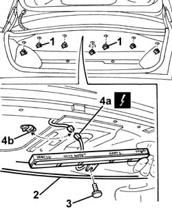
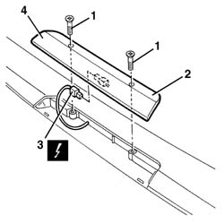

5550D16 third stop light - r+r
- Path
- Procedures > 55 ELECTRICAL EQUIPMENT > 5550 MANOEUVRING AND WARNING SIGNALS > 5550D brake and reversing lights > 5550D16 third stop light - r+r
- Kind
- repair procedure (removal / refitting; the operation number is the code)
- Applies to
- all engines; all production periods
- Interactive page
- https://sloeber94.github.io/elrnDB-a156/en/#/3238489
Applies to: all engines; all production periods
 Removing
Removing
 Refitting
Refitting1. Open the boot lid, turn and undo the lower studs securing the upper trim.
2. Lower upper trim (2a) and unscrew knob (2b) securing the third brake light.
3. Prise out the brake light and remove.
4. Prise electrical connection (4a) out of support (4b) and disconnect.
Recover the light cluster.
 | Name | Connector |
|---|---|---|
4a | Additional ("third brake light") |

Applies to: all engines; all production periods
Refitting
RemovingCheck that the light cluster is not damaged.
Connect the electrical connection and anchor it to the mount.
Lower the upper trim and fit the light in its seat.
Tighten the retaining knob.
Do up the lower studs securing the upper trim.
Check the operation of the third brake light.
Applies to: all engines; all production periods; only with equipment: Station Wagon
Removing
Refitting7040G36 BULB HOLDER FOR LOAD CARRYING COMPARTMENT lighting on tailgate - R.R.
7015A05 tail-gate lower interior panel-r r
7015A06 tail-gate upper interior panel-r r
1. Unscrew the bolts
2. Move the third brake light slightly.
3. Disconnect the electrical connections.
| Name | Connector |
|---|---|---|
3 | Additional ("third brake light") |
4. Recover the third brake light.

Applies to: all engines; all production periods; only with equipment: Station Wagon
Refitting
RemovingCheck that the third brake light is not damaged.
Connect the electrical connection for the third brake light.
Check the operation of the third brake light.
Position the third brake light and tighten the bolts.
7015A06 tail-gate upper interior panel-r r
7015A05 tail-gate lower interior panel-r r
7040G36 BULB HOLDER FOR LOAD CARRYING COMPARTMENT lighting on tailgate - R.R.
Topics linked from this page (5)
- 7015A05 tail-gate lower interior panel-r r
- 7015A06 tail-gate upper interior panel-r r
- 7040G36 BULB HOLDER FOR LOAD CARRYING COMPARTMENT lighting on tailgate - R.R.
- 7210G76 rear spoiler
- F40 Additional ("third brake light")